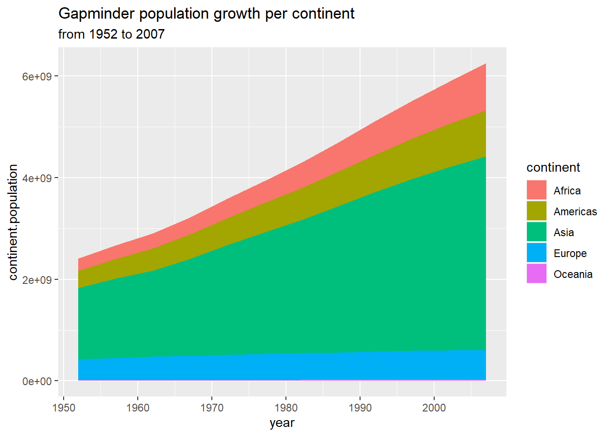

Chapter 2 What is Tidyverse?
There are definitely one or two packages that would make your life with R a little bit easier, i.e. they’re designed to do the kind of analysis or data visualization which is important to your domain-specific knowledge. The tidyverse is an ecosystem of R packages designed to work consistently and interdependently together to provide a flexible and easy-to-understand workflow for doing data science with the R language. The fundamental building block of the tidyverse is the concept of tidy data. The tidyverse has been in development since early 2014 and is becoming increasingly mature. But the tidyverse should never be considered a replacement for Base R. It will remain crucial to understand the base R way of doing things.
- In other words, the tidyverse is both a collection of R packages, and an approach to how to do data science effectively, and reproducibly with the R language.
2.1 Why use the Tidyverse?
So what makes the tidyverse different? Well, the core of the tidyverse is developed by developers at RStudio. It’s a company with an extremely good reputation including, for R package development. RStudio’s own internal tools dependent on components of the tidyverse, helping to reassure us of the long term viability of the tidyverse ecosystem. Tidyverse is developed openly on GitHub, meaning users can track continuing development and if necessary, fork packages in the future if Rstudio themselves, stop updating them.
2.2 Strengths of Tidyverse
What does the tidyverse provide us as end users or data scientists? Well, using tidyverse leads to advantages in the following main areas: - Data importation - Data wrangling - Data visualization
2.2.1 Data import
Let’s look at each of those. readr completely blows away the base-R tools for importing rectangular data files like csv (comma-separated values) and tsv (tab-separated values) files. It’s not only significantly faster than base-R but it’s more intelligent. For instance, automatically converting dates to dates, times to times, and converting columns that should be numbers into numbers. And finally, it never ever imports columns of strings as factors. If you’re already a base-R user, chances are you’ve spent hours of frustration because of this issue using base-R. This section includes importing data with readr as it’s for general workhorse of most R users data import toolkit. The readxl library makes importing from excel files ridiculously simple allowing worksheets, individual cells, or even cell ranges to be targeted for import easily. The tidyverse also aims to fit into existing workflows. haven allows data to be imported from SAS, SPSS, and Stata. Now these three packages significantly decrease the time needed to massage data files into R. And help solve a number of common frustrations with base-R packages. But please note that readr is the only package of the three that is part of the core tidyverse. You need to separately load readxl and haven to access those libraries.
2.2.2 Data wrangling
The tidyverse utilizes the pipe operator (%>%). This percentage greater than percentage thing to provide a logical framework for chaining together common data wrangling tasks. This makes code very faster to write and easier to read. There’s a chapter dedicated to the pipe operator as it is mysterious magic to many R users. The tidyverse is designed around a concept of tidydata. The tidyr library is designed for reshaping and transforming your imported data into a structure ready to manipulate, model, and visualize with the tidyverse. dplyr is the library for sub-setting, filtering, summarizing, and generally wrangling your data. It also provides a number of tools for doing database-like operations for working on relational datasets. These packages used together form a core data processing component of the tidyverse. The operations you’ll perform with these are both significantly faster and simpler to construct than simply using base-R. ggplot2 provides a complete consistent and incredibly powerful grammar of graphics, allowing impressive static visualizations to be built with minimal effort.
I’m going to quickly show what’s possible using all the components for tidyverse together. After loading libraries gapminder and tidyverse, we have a little bit of code which uses dplyr (to group my data by continent and year, and then summaries to calculate the continent population). And then I use ggplot2 to generate my chart. I have quite a beautiful looking static visualization generated with ggplot2. It’s important to know that ggplot2 provides a powerful consistent grammar for creating static shots.
library("gapminder")
library("tidyverse")
gapminder %>%
group_by(continent, year) %>%
summarise(continent.population = sum(as.numeric(pop))) %>%
ggplot(aes(x = year, y = continent.population)) +
geom_area(aes(fill = continent), position = "stack") +
ggtitle("Gapminder population growth per continent",
subtitle = paste("from", min(gapminder$year), "to", max(gapminder$year)))
If you’re interested in building interactive charts for the web with R, you’ll need to learn about htmlwidgets. But in most commonly used htmlwidgets libraries, lean heavily on the tidyverse for preparing data for visualization. Plus all the good htmlwidgets are designed to use the pipe operator. Let’s have a look at what we could build using htmlwidgets in R. We use the dplyr library to wrangler our data. And then we build our chart in the highcharter library. So instead of a static chart, what we have now is an interactive chart that I can move my cursor through and get information for specific points in the dataset. I can also actually remove series if I’m interested in doing that. So, ggplot2 is part of the tidyverse and allows us to build static charts in a consistent manner. htmlwidgets allows us to create interactive charts and often depends on the tidyverse for wrangling and constructing our data for visualization.
library("gapminder")
library("tidyverse")
library("highcharter")
gapminder %>%
group_by(continent, year) %>%
summarise(continent.population = sum(as.numeric(pop))) %>%
hchart("area",
hcaes(x = year,
y = continent.population,
group = continent)
) %>%
hc_plotOptions(area = list(stacking = "normal")) %>%
hc_tooltip(shared = TRUE)And finally, there’s the shiny library which allows us to build web applications using only the R language without knowing any html or javascript. And shiny allows us to use htmlwidgets to embed interactive charts inside of our web applications.
2.3 Maintain the Tidyverse
So how do we go about maintaining the tidyverse? Well, remember that in order to use the tidyverse on our system we’ve installed three discrete things: R itself, RStudio, and the tidyverse collection of packages. To keep fully up to date with the tidyverse, unfortunately we really need to keep on top of all three of these things individually. So let’s look at how we do that.
The process you need to go through to keep up to date with R is the most frustrating of all the three tools since there’s not a consistent way to do this from within RStudio. Base-R is updated approximately 4 times a year but there’s not a regular release cycle. I’d advise that you check every few months for a new version of R. If R console tells you there’s a newer version then type a y + Enter and this will launch you to your web browser to the downloads page for R for your operating system. When you’re there it’s really important to check the release date of that version of R. I thoroughly advise that you do not update R until the release is at least one month old. This is to give the package maintainers that you rely on enough time to update their packages to depend on this new version of R.
So how about updating RStudio? Well, RStudio will automatically check whether there’s a new version of RStudio available when you open it up. Updates are typically released a few times a year and generally they include awesome new features that are of general interest. For instance support for new features in R markdown documents or simply making it easier to publish Shiny apps. I thoroughly recommend that as soon as RStudio tells you there’s a new version click update, it will take you to the RStudio website and allow you to download the new version.
So how about keeping the tidyverse up to date? Well thankfully that’s quite simple. The constituent components of the tidyverse don’t have a regular update frequency but that doesn’t matter as we have the wonderful tidyverse update function which handles everything for us.
tidyverse_update()In RStudio simply run the function tidyverse update, it will go away and check are there new versions or packages available, and if so it will grab those versions and install them ready for you to use. Now you might sometimes hear on the grapevine that there are new features available in the development versions of the tidyverse packages. So where do these development versions live? Well they all live on GitHub and you can install the development version of a tidyverse library using the dev tools library if necessary. But where is this grapevine of news about tidyverse? Well one of the best places to keep up to date with what’s going on in the tidyverse, and in R in general, is on Twitter. The core RStudio development team are actually very active here and the two hashtags that you want to look out for are rstats and tidyverse. So if you do want one of these development builds of a tidyverse package, as I mentioned, you use the dev tools library and the function install github. But how about if you find that the development version isn’t just working out for you, you want to return to the stable version? Well at any time simply use the function install.packages tidyverse and this will recover you to the crown version of all the libraries within the tidyverse.